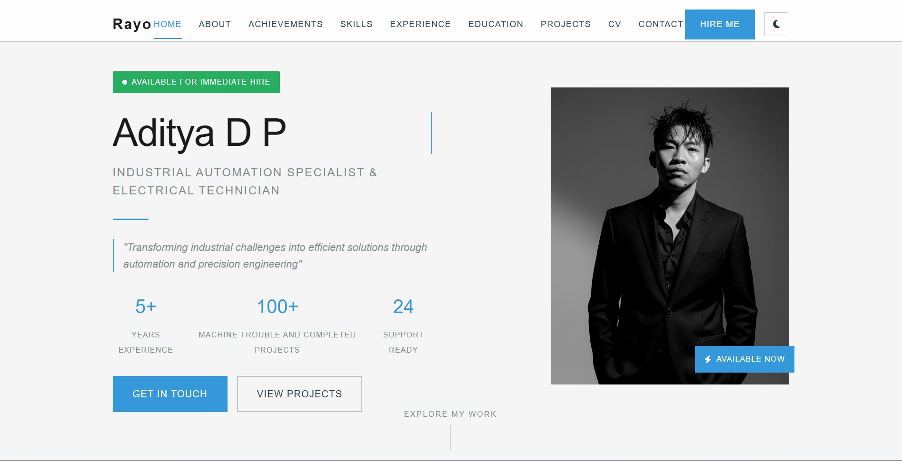

Industrial Automation Specialist & Electrical Technician
"Transforming industrial challenges into efficient solutions through automation and precision engineering"
Skilled Industrial Technician specializing in automation systems and electrical maintenance
With over 5 years of progressive experience at PT DJARUM, I've developed expertise in industrial automation, PLC programming, and preventive maintenance systems. My career journey has taken me from junior technician roles to managing complex electrical systems across multiple production areas.
I believe in proactive maintenance and continuous improvement as the foundation for industrial excellence. My approach combines traditional electrical expertise with modern automation technologies to deliver reliable and efficient solutions.
Leveraging PLC and control systems for optimal performance
Systematic maintenance to prevent downtime and make it easier for operators to run the machine
Continuous learning and technology adoption
Reducing machine downtime through optimized preventive maintenance schedules and corrective maintenance
in production lines via PLC programming improvements
in maintenance through corrective maintenance implementation
troubleshooting response time with systematic approaches
Managed electrical maintenance for production lines in all areas, with a focus on continuous improvement in terms of both scheduled maintenance and machine problems that cannot be resolved by each area.
Managed electrical maintenance for west area production lines, focusing on continuous improvement and knowledge sharing.
Responsible for electrical systems maintenance in the east production area, handling both conventional and automated machinery.
Focused on PLC programming, automation systems, and process optimization for manufacturing equipment.
Handled routine maintenance, breakdown repairs, and electrical system upgrades for production facilities.
Started career in industrial electrical maintenance, learning fundamental skills and company procedures.
Gained hands-on experience in industrial automation and IoT projects during internship program.
Academic foundation in industrial automation and electrical engineering

A website that includes a description of myself and my resume. You can leave a message directly on the website, which I will read on my Google Drive.
Professional resume available for download and printing
Download my comprehensive CV in PDF format for easy sharing with recruiters and hiring managers.
File: CV_ADITYA_DWI_P.pdf | Size: ~2MB |
My PDF CV includes comprehensive details in a concise, professional format:
Concise overview of skills and experience
Detailed breakdown of automation expertise
Complete employment timeline
Academic background and certifications
Ready to bring industrial automation expertise to your team
Looking for new challenges in industrial automation and electrical systems. Available for full-time positions, contracts, or project-based work.
Saya siap membantu Anda dengan solusi otomasi dan perawatan industri. Hubungi saya melalui salah satu saluran di samping.